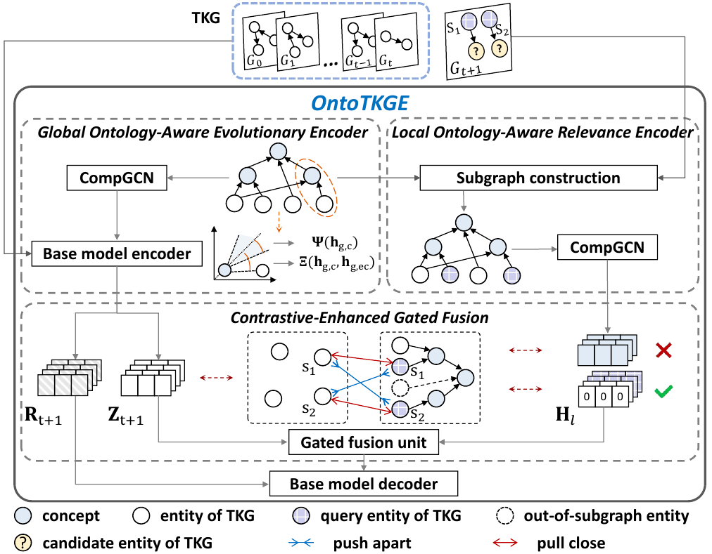
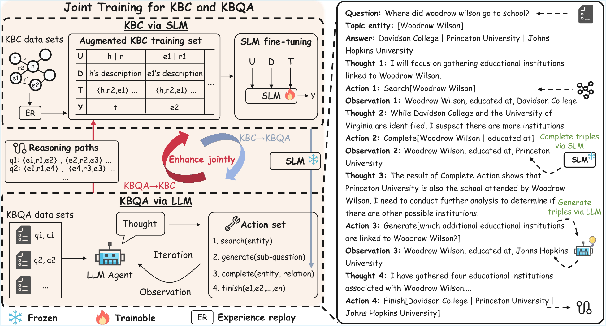
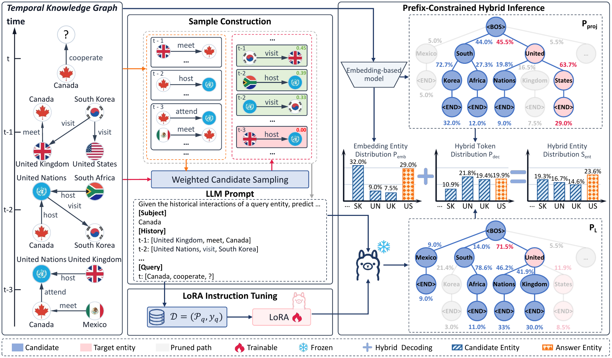
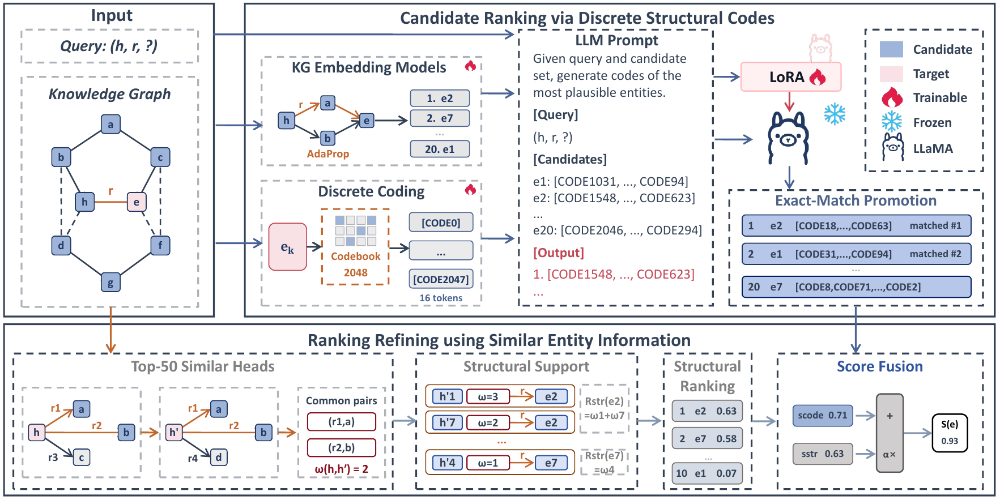
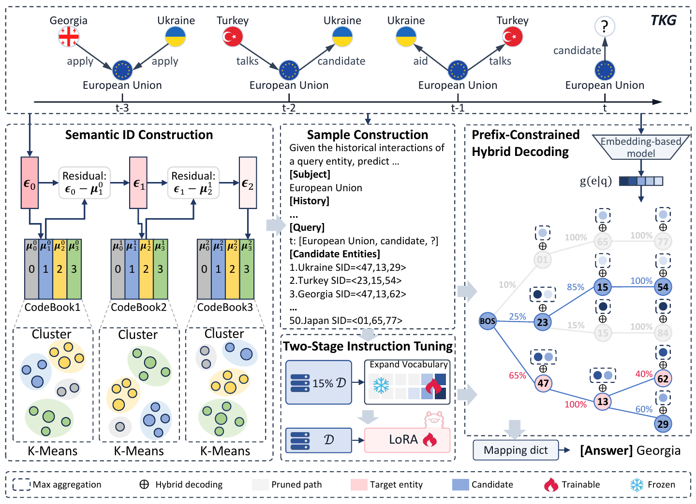
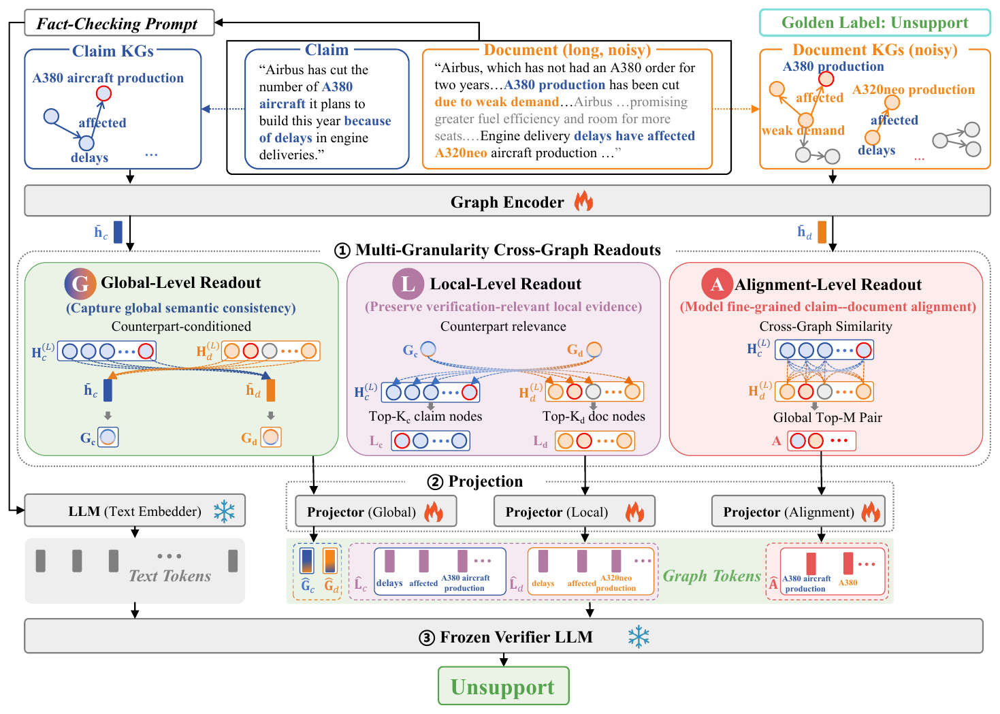
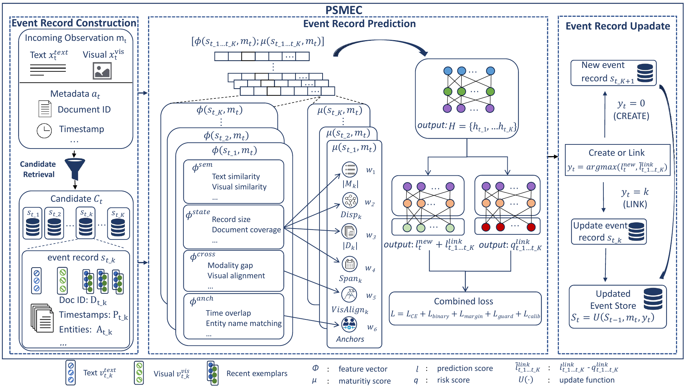

About
I am a second-year M.S. student in Artificial Intelligence at Northeastern University, jointly advised by Prof. Xiaochun Yang and Lecturer Yinan Liu. Previously, I received my bachelor degree from Guangdong University of Technology in 2024. If you are interested in collaborating with me or want to have a chat, please feel free to contact me through e-mail.
My research interests include large language models and knowledge graphs. I am especially interested in Effective AI, DB + AI, and LLM Agents.
I am actively seeking a PhD position for Fall 2027.
News
-
2026.08
CoSC was accepted to ISWC 2026 Poster (CCF B).
-
2026.08
Three papers were accepted to WISE 2026 (CCF B).
-
2026.07
One paper was submitted to AAAI 2027 (CCF A).
-
2026.05
OntoTKGE entered the revision stage at VLDB 2026 (CCF A).
-
2026.04
JCQL was accepted to ACL 2026 Main Conference (CCF A).
-
2025.01
ETRQA was accepted to ACL 2025 Findings (CCF A).
-
2022.11
WLLP was accepted to Frontiers in Microbiology (JCR Q1).
Publications
† Equal contribution, * Corresponding author.


Anonymous Submission
Submitted to The 41st Annual AAAI Conference on Artificial Intelligence (AAAI), 2027

LLM-Based Knowledge Graph Completion Combining Discrete Structural Coding with Similar Entity Information
The 25th International Semantic Web Conference (ISWC), 2026

PAST: Prefix-Aware Semantic ID Generation for Temporal Knowledge Graph Extrapolation
The 27th International Conference on Web Information Systems Engineering (WISE), 2026

GLACheck: Multi-Granularity Cross-Graph Representation Learning for Grounded Long-Document Fact-Checking
The 27th International Conference on Web Information Systems Engineering (WISE), 2026

Streaming Multimodal Event Coreference Resolution across Documents
The 27th International Conference on Web Information Systems Engineering (WISE), 2026
Anonymous Submission
Submitted to The 2026 Conference on Empirical Methods in Natural Language Processing (EMNLP), 2026
WLLP: A Weighted Reconstruction-Based Linear Label Propagation Algorithm for Predicting Potential Therapeutic Agents for COVID-19
Frontiers in Microbiology, 2022
Education
Northeastern University
M.S. in Artificial Intelligence
Guangdong University of Technology
B.S. in Computer Science and Technology
Work Experience
Institute of Computing Technology, Chinese Academy of Sciences (ICT, CAS)
May 2023 - Aug. 2023, Research Intern. Mentor: Mingyu Yan.